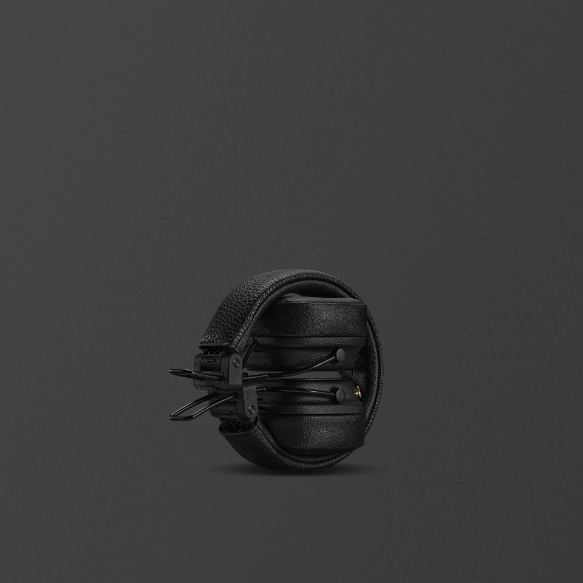

오래 이어지는 플레이리스트
100시간 이상의 무선 재생으로 충전 사이의 간격을 넉넉하게 가져갑니다.
나만의 리듬으로, 더 오래. 마샬의 아이코닉한 디자인과 대담한 사운드가 당신의 하루를 함께합니다.
DISCOVER THE DETAILS ↓
음악이 있는 곳이라면 어디든. 컴팩트하게 접히는 디자인으로 가방 속에 담고, 익숙한 플레이리스트와 새로운 길을 만나보세요.

접히는 헤드밴드와 손끝의 컨트롤 노브. 이동과 조작을 위한 디테일을 가까이 살펴봅니다.
TAKE A CLOSER LOOK ↓매일의 이동을 가볍게 만드는 온이어 헤드폰. 긴 재생 시간과 접이식 구조에 집중한 모델입니다.
100시간 이상의 무선 재생으로 충전 사이의 간격을 넉넉하게 가져갑니다.
접이식 구조로 사용하지 않을 때 부피를 줄입니다. 이동할 때는 이어컵과 헤드밴드에 무리한 힘이 가해지지 않게 보관하세요.
USB-C와 무선 충전을 지원해 책상과 이동 중의 충전 방식을 선택할 수 있습니다.
아이코닉한 실루엣
재생·충전 시간은 공식 시험 기준이며 음량, 설정과 사용 환경에 따라 달라집니다.
Marshall Bluetooth 앱에서 M 버튼을 설정해 Spotify Tap, EQ 설정 또는 음성 비서에 빠르게 접근할 수 있습니다.
Major V는 ANC를 지원하지 않습니다. 소음 제어가 중요하다면 Monitor III ANC의 ANC 및 Transparency 모드와 비교해보세요.
USB-C와 무선 충전을 지원하며, 공식 안내 기준 완전 충전에는 약 3시간이 걸립니다. 충전 환경에 따라 시간은 달라질 수 있습니다.
당신의 다음 사운드를 조금 더 자세히.
마샬의 시그니처 사운드와 직관적인 컨트롤 노브로 일상 속 음악을 간편하게 즐기세요.
헤드폰을 접어 보관할 수 있는 디자인으로 이동하는 순간에도 함께합니다.
USB-C 또는 무선 충전으로 다음 플레이리스트를 준비하세요.